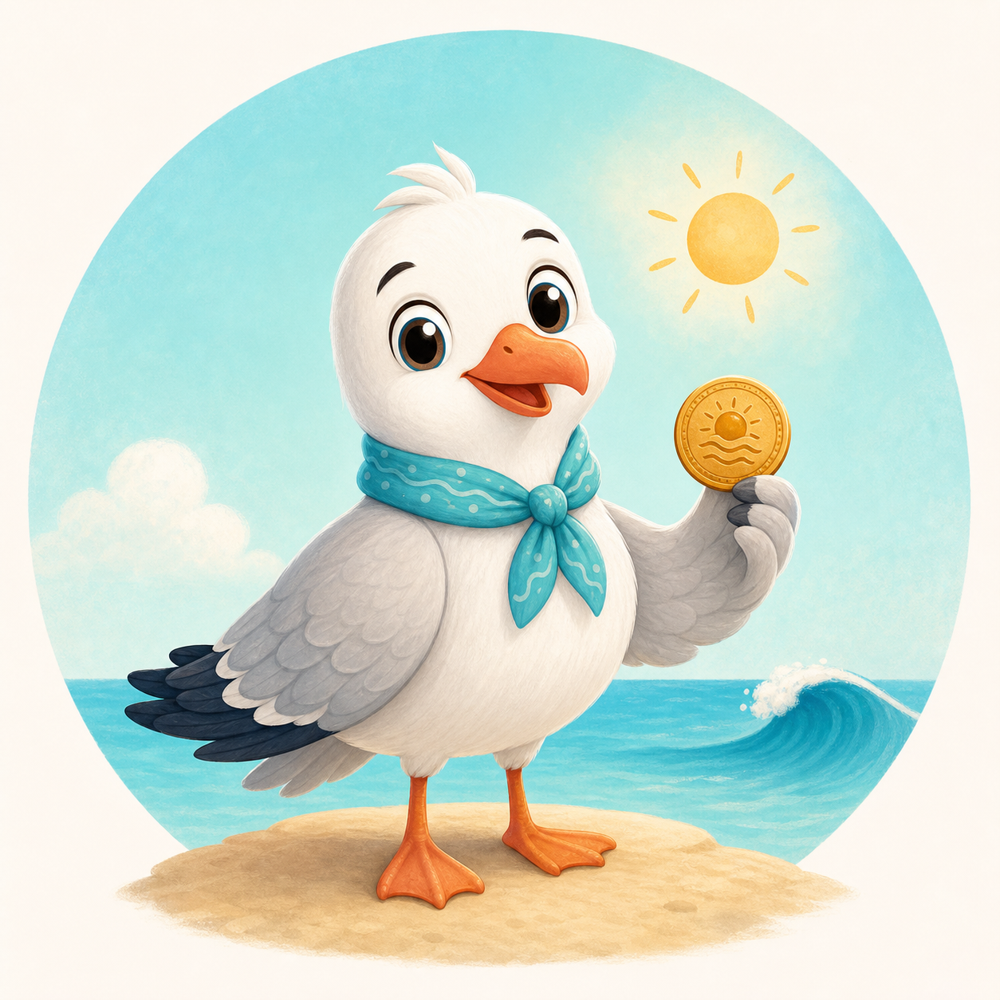

Malí cestovatelia
Dobrodružná zvuková mapa Stredomoria
Ahoj! Som Čajka Leto. Vyber si krajinu a nájdi správny obrázok.
Cestovateľský pas0 z 8 pečiatok
Ahoj, malý objaviteľ
Ťukni a začni hru s Čajkou Leto
Čajka Leto ťa bude pri hre sprevádzať hlasom.
Vyber krajinu
Kam poletíme?
Čajka Leto čaká
Vyber si krajinu na mape
V každej krajine nájdeš päť obrázkov.
Potom ti Čajka Leto ukáže tri veľké možnosti.
Výborne! Stal si sa Malým objaviteľom Stredomoria!
Všetkých osem pečiatok je v tvojom pase.
Tvoje dobrodružstvo
Tu sú všetky obrázky, ktoré si objavil(a).
Diplom pre
Malého objaviteľa Stredomoria Za osem získaných cestovateľských pečiatokPre rodičov: jednoduchá hra pre deti približne od 5 do 7 rokov. Nevyžaduje čítanie, registráciu ani osobné údaje.